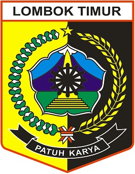

Sejarah Desa
Sejarah Singkat Desa Aikmel Utara
Desa Aikmel Utara merupakan bagian dari Desa Aikmel yang dimekarkan pada tahun 1991 ,
dan didifinitifkan pada tahun 1994 dengan Surat Keputusan Gubernur Kepala Daerah Tingkat I Nusa Tenggara Barat Nomor.
31 Tahun 1994 tentang Pengukuhan Desa Persiapan Aikmel Utara Menjadi Desa Difinitif.
Kemudian setelah dicanangkannya pemekaran desa oleh Bupati Lombok Timur kepada desa-desa yang memenuhi persyaratan dan kelayakan mengenai jumlah penduduk dan luas wilayah Sehingga Desa Aikmel Utara dimekarkan menjadi 3 (tiga) Desa yaitu Desa Aikmel Utara induk, Desa Toya yang mekar pada tahun 2010 berdasarkan peraturan Bupati Lombok Timur Nomor 16 tanggal 21 Mei 2010 tentang Pembentukan Dua Puluh Satu Desa Persiapan Di Kabupaten Lombok Timur dan Desa Aikperapa yang mekar pada tahun 2010 berdasarkan Peraturan Bupati Lombok Timur Nomor 41 Tahun 2010 tentang Pembentukan 8 (delapan) Desa di wilayah Kabupaten Lombok Timur.
Visi & Misi
Visi
Visi adalah suatu gambaran cita – cita atau impian yang dicapai dalam jangka waktu
6 (enam) tahun (2021 - 2027) dengan mempertimbangkan kekuatan dan potensi yang ada.
Visi : “Bekerja melayani masyarakat agar terbangunnya tata kelola pemerintahan yang
baik dan transparan guna mewujudkan desa aikmel utara yang jujur, adil, sejahtera dan berakhlak mulia”
Mewujudkan pemerintahan Desa yang Jujur dan Transparan dengan berupaya melibatkan seluruh komponen masyarakat baik dalam proses perencanaan dan pelaksanaan.
Melayani bidang pemerintahan Desa dengan baik, Cepat dan Tepat ( PELAYANAN SUPER ) dengan memamfaatkan Sistem Informasi Desa.
Melaksanakan Program Pembangunan secara Adil dan Merata dengan memberdayakan serta mengikutsertakan Masyarakat dalam pelaksanaan proyek desa.
mengedepankan Musyawarah dan Mupakat dalam kehidupan sehari - hari baik dengan pemerintahan maupun masyarakat.
Meningkatkan profesionalitas dan mengaktifkan seluruh perangkat Desa sesuai tupoksi masing - masing.
Meningkatkan Perekonomian dan kesejahteraan masyarakat lewat sektor pertanian,peternakan dan perikanan dan potensi Desa yang ada.
Pengadaan Ambulance Desa sebagai salah satu upaya untuk meningkatkan Pelayanan kesehatan Masyarakat.
Menciptakan kondisi Masyarakat yang tertib dan AMAN.
Meningkatkan pendapatan Desa melalui BUMDES yang maju dan produktif.
Menyediakan Ruang bagi masyarakat yang memberi saran, kritik demi kemajuan Desa.
Program Kegiatan Prioritas berdasarkan Visi Misi Kepala Desa.
Lembaga Masyarakat
Lembaga masyarakat di desa adalah organisasi atau kelompok yang berperan dalam membantu pemerintah desa menjalankan berbagai program dan kegiatan yang mendukung kesejahteraan warga.
PKK Desa Aikmel Utara
PKK (Pemberdayaan Kesejahteraan Keluarga) adalah organisasi masyarakat yang berfokus pada pemberdayaan keluarga, kesejahteraan ibu, dan anak. Melalui program-program seperti pelatihan keterampilan, kesehatan ibu dan anak, pendidikan, serta ekonomi keluarga, PKK membantu meningkatkan kualitas hidup keluarga di tingkat desa.
Kader Posyandu Desa Aikmel Utara
Lembaga Kader Posyandu adalah relawan terlatih yang berperan penting dalam program kesehatan di Posyandu. Anggota masyarakat setempat, terutama ibu-ibu, berkomitmen untuk meningkatkan kesehatan keluarga dan komunitas melalui penyuluhan dan pemeriksaan kesehatan ibu dan anak.
LPM Desa Aikmel Utara
Lembaga Pemberdayaan Masyarakat (LPM) adalah organisasi yang berperan dalam pemberdayaan masyarakat di desa. LPM mengembangkan potensi lokal melalui program-program di bidang ekonomi, pendidikan, dan sosial, serta mendorong partisipasi aktif masyarakat dalam perencanaan dan pelaksanaan pembangunan.
KARANG TARUNA MUNCAR KENCANA
Karang Taruna adalah organisasi kepemudaan di tingkat desa yang berfokus pada pengembangan potensi pemuda. Mereka mengadakan berbagai kegiatan sosial, budaya, dan olahraga, serta berperan aktif dalam pemberdayaan masyarakat dan peningkatan kesejahteraan di lingkungan sekitar.
BKD
Badan Keamanan Desa adalah organisasi yang bertugas menjaga keamanan dan ketertiban di lingkungan desa. Mereka bekerja sama dengan masyarakat dan pemerintah desa untuk mencegah tindakan kriminal, menjaga stabilitas, serta menciptakan lingkungan yang aman dan damai bagi warga desa.
Pemerintah Desa
-

Patuh Karya
prinsip yang mengutamakan kedisiplinan dan integritas dalam setiap karya yang dihasilkan. Melalui Patuh Karya, kita diajak untuk bekerja dengan tanggung jawab, menjaga kualitas, serta mematuhi aturan demi menghasilkan hasil terbaik yang bermanfaat. -
Kepala Desa
Aikmel UtaraKepala Desa
Kepala desa memiliki peran penting dalam mengelola pemerintahan dan mengembangkan potensi desa. Sebagai pemimpin masyarakat, kepala desa bertanggung jawab untuk meningkatkan kesejahteraan warga, menjalin kerjasama, serta mengimplementasikan program-program yang mendukung pembangunan berkelanjutan dan partisipatif.
-
Sekertaris Desa
Aikmel UtaraSekertaris Desa
Sekretaris desa adalah pegawai yang membantu kepala desa dalam administrasi dan pengelolaan kegiatan pemerintahan. Tugasnya mencakup pengarsipan dokumen, penyusunan laporan, serta menjalin komunikasi antara pemerintah desa dan masyarakat, memastikan transparansi dan efisiensi dalam pelayanan publik.
-
Kasi
PemerintahanKasi Pemerintahan
Kasi pemerintahan berperan penting dalam pelaksanaan program-program desa, memastikan bahwa kebijakan pemerintah pusat dan daerah diimplementasikan dengan baik. Ia juga bertanggung jawab mengkoordinasikan kegiatan pemerintahan, serta memberikan arahan dan bimbingan kepada perangkat desa dalam pelayanan masyarakat
-
Kasi
KesejahteraanKasi kesejateraan
Kasi kesejahteraan berperan penting dalam merancang dan melaksanakan program-program yang meningkatkan kualitas hidup masyarakat. Tugasnya mencakup pengelolaan bantuan sosial, pelatihan keterampilan, dan program kesehatan, sehingga dapat meningkatkan kesejahteraan dan mengurangi angka kemiskinan di desa.
-
Kaur
Keuangan
Kaur Keuangan
Kaur keuangan bertanggung jawab mengelola semua aspek keuangan desa, termasuk penyusunan anggaran, pencatatan transaksi, dan pelaporan keuangan. Perannya sangat penting untuk memastikan transparansi dan akuntabilitas dalam penggunaan anggaran, serta mendukung pembangunan yang berkelanjutan di desa.
-
Kaur
PerencanaanKaur Perencanaan
Kaur perencanaan memiliki tugas vital dalam menyusun rencana pembangunan desa, mengidentifikasi kebutuhan masyarakat, dan merumuskan program yang sesuai. Dengan perencanaan yang matang, kaur perencanaan berkontribusi untuk mencapai tujuan pembangunan yang berkelanjutan dan meningkatkan kesejahteraan warga desa.
-
Kasi
PelayananKasi Pelayanan
Kasi pelayanan bertanggung jawab untuk memastikan bahwa masyarakat menerima layanan yang berkualitas dan tepat waktu. Tugasnya meliputi pengelolaan administrasi, penyuluhan, dan penanganan keluhan warga, sehingga meningkatkan kepuasan masyarakat terhadap pelayanan publik di desa.
-
Kaur
TU/UMUMKaur TU
Kaur TU (Tata Usaha) bertanggung jawab dalam pengelolaan administrasi desa, termasuk pengarsipan dokumen dan penyusunan laporan. Perannya sangat penting untuk menjaga kelancaran administrasi, memastikan komunikasi yang efektif antara perangkat desa dan masyarakat, serta mendukung kegiatan pemerintahan.
-
Operator
Operator
Operator desa memiliki peran penting dalam pengelolaan administrasi dan layanan masyarakat di tingkat desa. Tugasnya meliputi pencatatan data, pengarsipan, pengelolaan keuangan desa, serta membantu perangkat desa dalam penyusunan laporan dan koordinasi dengan berbagai lembaga masyarakat setempat.
-
Kawil
Dasan Lian Leuk
TUGAS DAN FUNGSI
Kawil Dasan Lian Leuk memiliki peran strategis dalam menghubungkan masyarakat dengan pemerintahan desa. Tugasnya mencakup pengawasan pembangunan, pengumpulan aspirasi warga, serta memastikan program-program desa berjalan efektif, demi meningkatkan kesejahteraan dan kemajuan komunitas di wilayahnya.
-
Kawil
Dasan Lian Daya
TUGAS DAN FUNGSI
Kawil Dasan Lian Daya memiliki peran strategis dalam menghubungkan masyarakat dengan pemerintahan desa. Tugasnya mencakup pengawasan pembangunan, pengumpulan aspirasi warga, serta memastikan program-program desa berjalan efektif, demi meningkatkan kesejahteraan dan kemajuan komunitas di wilayahnya.
-
Kawil
Dasan Lian Barat
TUGAS DAN FUNGSI
Kawil Dasan Lian Barat memiliki peran strategis dalam menghubungkan masyarakat dengan pemerintahan desa. Tugasnya mencakup pengawasan pembangunan, pengumpulan aspirasi warga, serta memastikan program-program desa berjalan efektif, demi meningkatkan kesejahteraan dan kemajuan komunitas di wilayahnya.
-
Kawil
Karang Petak
TUGAS DAN FUNGSI
Kawil Karang Petak memiliki peran strategis dalam menghubungkan masyarakat dengan pemerintahan desa. Tugasnya mencakup pengawasan pembangunan, pengumpulan aspirasi warga, serta memastikan program-program desa berjalan efektif, demi meningkatkan kesejahteraan dan kemajuan komunitas di wilayahnya.
-
Kawil
Dasan Lian Timuk
TUGAS DAN FUNGSI
Kawil Dasan Lian Timuk memiliki peran strategis dalam menghubungkan masyarakat dengan pemerintahan desa. Tugasnya mencakup pengawasan pembangunan, pengumpulan aspirasi warga, serta memastikan program-program desa berjalan efektif, demi meningkatkan kesejahteraan dan kemajuan komunitas di wilayahnya.
BPD Aikmel Utara
Badan Permusyawaratan Desa “BPD” merupakan lembaga perwujudan demokrasi dalam penyelenggaraan pemerintahan desa, BPD dapat dianggap sebagai “parlemen”-nya desa, BPD merupakan lembaga baru di desa pada era otonomi daerah di Indonesia. Sesuai dengan fungsinya, maka BPD ini dapat dikatakan sebagai lembaga kemasyarakatan. Karena berkisar pada pemikiran pokok yang dalam kesadaran masyarakat. hal ini sejalan dengan ungkapan Soekanto “2004:219”
Anggota BPD ialah wakil dari penduduk desa bersangkutan berdasarkan keterwakilan wilayah yang ditetapkan dengan cara musyawarah dan mufakat. Aanggota BPD terdiri dari ketua Rukun Warga, pemangku adat, golongan profesi, pemuka agama dan tokoh atau pemuka masyarakat lainnya. Masa jabatan anggota BPD ialah 6 tahun dan dapat diangkut/diusulkan kembali untuk satu kali masa jabatan berikutnya. Pimpinan dan Anggota BPD tidak diperbolehkan merangkap jabatan sebagai Kapala Desa dan Perangkat Desa.
Daftar Nama dan Jabatan
| Nama | Alamat | Jabatan |
|---|---|---|
| Drs. H. SULAIMAN, MA | Dasan Lian Timuk | Ketua |
| MUHAMMAD TANWIR, SH | Dasan Lian Timuk | Wakil Ketua |
| AHMAD MUZAMMIL HADI, SSTP | Dasan Lian Barat | Sekretaris |
| NUKMAN | Dasan Lian Lauk | Anggota |
| AHMAD | Dasan Lian Daya | Anggota |
| H. AGUS SUBANDI | Dasan Lian Daya | Anggota |
| MUSTAMIN | Karang Petak | Anggota |
Prestasi Nasional
Desa Aikmel Utara
Desa Aikmel Utara, letaknya tidak jauh dari Kecamatan Aikmel. Desa ini salah satu desa berprestasi di Lotim. Prestasi membanggakan, karena mampu menjadi juara dua lomba desa tingkat nasional mewakili regional Nusa Tenggara Barat dari empat regional yang digelar Kementerian Dalam Negeri
baca berita selengkapnya Klik disini
Location : kecamatan Aikmel, kabupaten Lombok Timur, provinsi Nusa Tenggara Barat, Indonesia.